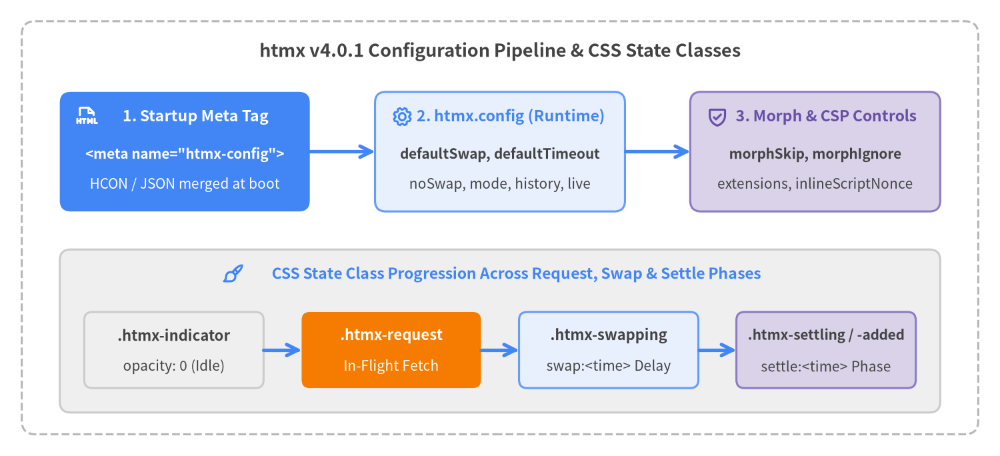

Configuration Options & CSS State Classes
htmx v4.0.1 is configured declaratively via a <meta name="htmx-config"> tag in <head> (supporting both HCON and JSON syntax) or programmatically via the global htmx.config object (HtmxConfig). Alongside runtime configuration, htmx manages five CSS state classes (htmx-request, htmx-indicator, htmx-swapping, htmx-settling, and htmx-added) to coordinate loading spinners and CSS transitions without JavaScript boilerplate.

Source Code
from drawlib.canvas import save, setup
from drawlib.icons import phosphor
from drawlib.lines import line
from drawlib.shapes import rectangle
from drawlib.styles import Styles
from drawlib.text import text
setup(width=184, height=84, dpi=150)
# Outer frame
rectangle((92, 42), width=176, height=76, style=Styles.MutedDashed.patch(shape_r=2.5))
text(
(92, 74.5),
"htmx v4.0.1 Configuration Pipeline & CSS State Classes",
style=Styles.DarkBold.patch(text_size=13.0),
)
# Top Row: Configuration Pipeline
rectangle((34, 56), width=46, height=22, style=Styles.PrimaryFlat.patch(shape_r=2.0))
phosphor.file_html((16, 62.5), width=4.0, style=Styles.WhiteBold)
text((36, 62.5), "1. Startup Meta Tag", style=Styles.WhiteBold.patch(text_size=11.0))
text((34, 55.5), '<meta name="htmx-config">', style=Styles.WhiteBold.patch(text_size=10.0))
text((34, 50.0), "HCON / JSON merged at boot", style=Styles.White.patch(text_size=10.0))
line((57, 56), (69, 56), arrow_head="->", style=Styles.PrimaryBold)
rectangle((92, 56), width=46, height=22, style=Styles.PrimaryNeutral.patch(shape_r=2.0))
phosphor.gear((74, 62.5), width=4.0, style=Styles.PrimaryBold)
text((94, 62.5), "2. htmx.config (Runtime)", style=Styles.PrimaryBold.patch(text_size=11.0))
text((92, 55.5), "defaultSwap, defaultTimeout", style=Styles.DarkBold.patch(text_size=10.0))
text((92, 50.0), "noSwap, mode, history, live", style=Styles.Dark.patch(text_size=10.0))
line((115, 56), (127, 56), arrow_head="->", style=Styles.PrimaryBold)
rectangle((150, 56), width=46, height=22, style=Styles.SecondaryNeutral.patch(shape_r=2.0))
phosphor.shield_check((132, 62.5), width=4.0, style=Styles.SecondaryBold)
text((152, 62.5), "3. Morph & CSP Controls", style=Styles.SecondaryBold.patch(text_size=11.0))
text((150, 55.5), "morphSkip, morphIgnore", style=Styles.DarkBold.patch(text_size=10.0))
text((150, 50.0), "extensions, inlineScriptNonce", style=Styles.Dark.patch(text_size=10.0))
# Bottom Container: CSS State Class Lifecycle
rectangle((92, 23), width=162, height=30, style=Styles.Neutral.patch(shape_r=2.0))
phosphor.paint_brush((43, 33.5), width=4.0, style=Styles.PrimaryBold)
text(
(95, 33.5),
"CSS State Class Progression Across Request, Swap & Settle Phases",
style=Styles.PrimaryBold.patch(text_size=11.0),
)
rectangle((32, 19.5), width=33, height=14, style=Styles.Neutral.patch(shape_r=1.5))
text((32, 22.2), ".htmx-indicator", style=Styles.DarkBold.patch(text_size=10.5))
text((32, 16.5), "opacity: 0 (Idle)", style=Styles.Dark.patch(text_size=10.0))
line((48.5, 19.5), (55.5, 19.5), arrow_head="->", style=Styles.PrimaryBold)
rectangle((72, 19.5), width=33, height=14, style=Styles.AccentFlat.patch(shape_r=1.5))
text((72, 22.2), ".htmx-request", style=Styles.WhiteBold.patch(text_size=10.5))
text((72, 16.5), "In-Flight Fetch", style=Styles.White.patch(text_size=10.0))
line((88.5, 19.5), (95.5, 19.5), arrow_head="->", style=Styles.PrimaryBold)
rectangle((112, 19.5), width=33, height=14, style=Styles.PrimaryNeutral.patch(shape_r=1.5))
text((112, 22.2), ".htmx-swapping", style=Styles.DarkBold.patch(text_size=10.5))
text((112, 16.5), "swap:<time> Delay", style=Styles.Dark.patch(text_size=10.0))
line((128.5, 19.5), (135.5, 19.5), arrow_head="->", style=Styles.PrimaryBold)
rectangle((152, 19.5), width=33, height=14, style=Styles.SecondaryNeutral.patch(shape_r=1.5))
text((152, 22.2), ".htmx-settling / -added", style=Styles.DarkBold.patch(text_size=10.0))
text((152, 16.5), "settle:<time> Phase", style=Styles.Dark.patch(text_size=10.0))
save()
Summary of Configuration Symbols & CSS State Classes#
| Symbol | Category | Type / Default | Purpose |
|---|---|---|---|
<meta name="htmx-config"> |
Entry Point | HCON / JSON string | Declarative startup configuration merged in __initHtmxConfig(). |
htmx.config |
Entry Point | HtmxConfig |
Runtime configuration object accessible from JavaScript. |
defaultSwap |
HtmxConfig |
"innerHTML" |
Default swap strategy when hx-swap is omitted. |
defaultTimeout |
HtmxConfig |
60000 |
Default request timeout in milliseconds (60 seconds). |
defaultSettleDelay |
HtmxConfig |
1 |
Delay in milliseconds between DOM swap and CSS settle phases. |
defaultFocusScroll |
HtmxConfig |
false |
Whether to scroll the focused element into view after swapping. |
noSwap |
HtmxConfig |
[204, 304] |
HTTP status codes or wildcard patterns ("4xx", "5xx") that skip swapping. |
allowEmptySwapAfterOOB |
HtmxConfig |
false |
Whether to perform the main swap when only OOB content was returned. |
implicitInheritance |
HtmxConfig |
false |
Whether child elements implicitly inherit hx-* attributes without :inherited. |
transitions |
HtmxConfig |
false |
Whether to enable the View Transitions API globally across swaps. |
logAll |
HtmxConfig |
false |
Whether to log all dispatched htmx:* events to console.log. |
mode |
HtmxConfig |
"same-origin" |
Global Fetch CORS mode ("same-origin", "cors", "no-cors"). |
history |
HtmxConfig |
true |
Browser history mode (true, false, or "reload"). |
extensions |
HtmxConfig |
"" |
Comma-separated whitelist of extensions allowed to register (startup-only). |
prefix |
HtmxConfig |
"data-hx-" |
Secondary attribute prefix checked alongside hx- (startup-only). |
metaCharacter |
HtmxConfig |
undefined (":") |
Character replacing : in attribute modifiers and event names. |
indicatorClass |
HtmxConfig |
"htmx-indicator" |
CSS class hidden when idle and revealed inside .htmx-request. |
requestClass |
HtmxConfig |
"htmx-request" |
CSS class added to indicator targets while a request is in flight. |
includeIndicatorCSS |
HtmxConfig |
true |
Whether to inject the default indicator CSSStyleSheet into document.adoptedStyleSheets. |
inlineScriptNonce |
HtmxConfig |
undefined |
CSP nonce attribute applied to <script> elements processed in swapped fragments. |
morphIgnore |
HtmxConfig |
["data-htmx-powered"] |
Attribute prefixes preserved untouched during innerMorph / outerMorph. |
morphScanLimit |
HtmxConfig |
10 |
Maximum sibling lookahead when matching DOM nodes during morphing. |
morphSkip |
HtmxConfig |
"[hx-morph-skip]" |
CSS selector for elements skipped completely during morphing. |
morphSkipChildren |
HtmxConfig |
"[hx-morph-skip-children]" |
CSS selector for elements whose children are frozen during morphing. |
live |
HtmxConfig |
HxLive.Config |
Configuration namespace for the hx-live reactive extension. |
htmx-request |
CSS Class | State Class | Added to hx-indicator targets (or sourceElement) during an active request. |
htmx-indicator |
CSS Class | State Class | Marks loading indicator elements (opacity: 0 when idle, opacity: 1 during .htmx-request). |
htmx-swapping |
CSS Class | State Class | Applied to target before the swap:<time> delay and removed right after DOM insertion. |
htmx-settling |
CSS Class | State Class | Applied to target during the settle:<time> delay while CSS transitions settle. |
htmx-added |
CSS Class | State Class | Applied to each newly inserted element between htmx:before:settle and htmx:after:settle. |
Configuration Entry Points#
<meta name="htmx-config">#
Declarative configuration entry point read once when htmx initializes (__initHtmxConfig()). Its content attribute is parsed with HCON.merge(metaConfig.content, this.config), which accepts both concise HCON syntax (including dotted paths like live.inputDebounce:250) and standard JSON. Startup-only properties (prefix, extensions, includeIndicatorCSS, indicatorClass, requestClass for the adopted stylesheet) must be configured via <meta name="htmx-config"> before htmx.js executes.
Syntax
<!-- HCON syntax (concise key:value pairs) -->
<meta name="htmx-config" content="defaultSwap:outerMorph, transitions:true, defaultTimeout:15000">
<!-- JSON syntax -->
<meta name="htmx-config" content='{"defaultSwap":"outerMorph","transitions":true,"noSwap":[204,304,"5xx"]}'>
Attribute Details
| Attribute | Format | Evaluated When | Description |
|---|---|---|---|
name="htmx-config" |
Fixed identifier | new Htmx() constructor |
Queried via document.querySelector('meta[name="htmx-config"]') when htmx.js loads. |
content |
HCON or JSON | new Htmx() constructor |
Deep-merged into htmx.config via HCON.merge(). Protects against prototype pollution (__proto__, constructor, prototype are ignored). |
Usage Examples
<head>
<meta name="htmx-config" content="
defaultSwap: innerMorph,
transitions: true,
extensions: 'preload, sse',
live.inputDebounce: 200
">
<script src="/js/htmx.js"></script>
</head>
htmx.config#
The mutable runtime configuration object (HtmxConfig) attached to the global htmx instance. Any property read dynamically during request creation, swapping, or morphing can be modified at runtime via htmx.config.<prop> = value.
TypeScript Signature
htmx.config: HtmxConfig;
Runtime vs. Startup-Only Mutability
| Mutability Scope | Properties | Notes |
|---|---|---|
Startup-Only (set via <meta name="htmx-config">) |
prefix, extensions, includeIndicatorCSS |
Read once inside new Htmx() constructor (__initHtmxConfig() and __initRequestIndicatorCss()). Mutating htmx.config.extensions or htmx.config.prefix after page load has no effect on initial selectors or __approvedExt. |
Runtime Mutable (set via <meta> or htmx.config.*) |
defaultSwap, defaultTimeout, defaultSettleDelay, defaultFocusScroll, noSwap, allowEmptySwapAfterOOB, implicitInheritance, transitions, logAll, mode, history, metaCharacter, inlineScriptNonce, morphIgnore, morphScanLimit, morphSkip, morphSkipChildren, live |
Read dynamically on each request, swap, or morph operation. |
Usage Examples
// Enable verbose event logging and adjust timeout in the browser console
htmx.config.logAll = true;
htmx.config.defaultTimeout = 30000;
htmx.config.noSwap = [204, 304, '5xx'];
HtmxConfig Properties#
defaultSwap#
Specifies the default swap strategy used when an element does not declare hx-swap (and no HX-Reswap header or hx-status override is active).
TypeScript Signature
defaultSwap: string; // @default "innerHTML"
Property Specification
| Property | Type | Default | Accepted Values |
|---|---|---|---|
htmx.config.defaultSwap |
string |
"innerHTML" |
"innerHTML", "outerHTML", "outerSync", "innerMorph", "outerMorph", "textContent", "before" ("beforebegin"), "prepend" ("afterbegin"), "append" ("beforeend"), "after" ("afterend"), "delete", "none", plus swap modifiers. |
Usage Examples
<meta name="htmx-config" content="defaultSwap:innerMorph">
defaultTimeout#
Default timeout in milliseconds before htmx aborts an in-flight fetch() request with reason 'timeout' and dispatches htmx:error. In htmx v4, the default changed from 0 (no timeout in htmx 2) to 60000 (60 seconds). Set to 0 to disable timeouts globally, or override per-element via hx-config="timeout:10s".
TypeScript Signature
defaultTimeout: number; // @default 60000
Property Specification
| Property | Type | Default | Description |
|---|---|---|---|
htmx.config.defaultTimeout |
number |
60000 |
Timeout in milliseconds. 0 disables the automatic setTimeout(() => ctx.request.abort('timeout'), timeout) timer. |
Usage Examples
// Set global timeout to 15 seconds
htmx.config.defaultTimeout = 15000;
defaultSettleDelay#
Default delay in milliseconds between the DOM insertion (swap phase) and attribute restoration (settle phase) when CSS transition tasks are present on matched [id] elements. Can be overridden per swap via hx-swap="innerHTML settle:100ms".
TypeScript Signature
defaultSettleDelay: number; // @default 1
Property Specification
| Property | Type | Default | Description |
|---|---|---|---|
htmx.config.defaultSettleDelay |
number |
1 |
Delay in ms during which .htmx-settling is applied before settleTasks restore updated class, style, width, and height attributes. |
Usage Examples
// Increase settle delay to 20ms for smoother CSS transition kick-off
htmx.config.defaultSettleDelay = 20;
defaultFocusScroll#
Controls whether htmx scrolls the restored active element into the viewport after innerHTML or outerHTML swaps preserve focus by id. Can be overridden per swap using the focusScroll:true or focusScroll:false modifier on hx-swap.
TypeScript Signature
defaultFocusScroll: boolean; // @default false
Property Specification
| Property | Type | Default | Description |
|---|---|---|---|
htmx.config.defaultFocusScroll |
boolean |
false |
Passed as preventScroll: !defaultFocusScroll to newElt.focus(focusOptions). |
Usage Examples
htmx.config.defaultFocusScroll = true;
noSwap#
List of HTTP status codes or status wildcard patterns for which htmx skips the main DOM swap (ctx.swap = "none"). Unlike htmx 2 (which skipped swapping on 4xx/5xx by default), htmx v4 swaps all responses except 204 No Content and 304 Not Modified unless configured here or via hx-status:XXX.
TypeScript Signature
noSwap: number[]; // Runtime also accepts wildcard strings like "4xx", "5xx", "50x" (@default [204, 304])
Property Specification
| Property | Type | Default | Description |
|---|---|---|---|
htmx.config.noSwap |
Array<number | string> |
[204, 304] |
Checked in __handleStatusCodes() against exact status ("404"), 2-digit prefix ("50x"), and 1-digit prefix ("5xx"). Matching noSwap sets ctx.swap = "none" before hx-status:* is checked. |
Usage Examples
<!-- Prevent 5xx server error pages from swapping into partial targets -->
<meta name="htmx-config" content='{"noSwap": [204, 304, "5xx"]}'>
allowEmptySwapAfterOOB#
Controls whether the main target swap still runs (emptying the target) when a response originally contained only out-of-band (hx-swap-oob) elements and no main body content remains after extracting them. Note that <hx-partial> elements always prevent an empty main swap regardless of this setting, unless overridden per element with hx-swap="innerHTML swapEmpty:true".
TypeScript Signature
allowEmptySwapAfterOOB: boolean; // @default false
Property Specification
| Property | Type | Default | Description |
|---|---|---|---|
htmx.config.allowEmptySwapAfterOOB |
boolean |
false |
When false, a response consisting solely of hx-swap-oob elements leaves the main target untouched. When true, the now-empty fragment is swapped into target. |
Usage Examples
htmx.config.allowEmptySwapAfterOOB = true;
implicitInheritance#
Reverts htmx v4's explicit attribute inheritance model (:inherited) back to htmx 2's implicit inheritance model, where child elements automatically inherit hx-target, hx-swap, hx-include, hx-vals, hx-headers, hx-boost, hx-confirm, hx-indicator, hx-disable, hx-sync, hx-encoding, and hx-config from ancestor elements. Note that action attributes (hx-get, hx-post, hx-action, hx-trigger, hx-validate) never implicitly inherit even when implicitInheritance is true.
TypeScript Signature
implicitInheritance: boolean; // @default false
Property Specification
| Property | Type | Default | Description |
|---|---|---|---|
htmx.config.implicitInheritance |
boolean |
false |
When false (default), ancestor attributes only inherit if marked with :inherited (e.g., hx-target:inherited="#out"). When true, ancestor attributes inherit automatically and trigger the extension hook htmx_after_implicitInheritance. |
Usage Examples
<!-- Enable implicit inheritance for legacy htmx 2 templates -->
<meta name="htmx-config" content="implicitInheritance:true">
transitions#
Enables the browser View Transitions API (document.startViewTransition()) globally for all swaps unless explicitly disabled on an element via hx-swap="innerHTML transition:false".
TypeScript Signature
transitions: boolean; // @default false
Property Specification
| Property | Type | Default | Description |
|---|---|---|---|
htmx.config.transitions |
boolean |
false |
Initializes ctx.transition on every request. When true and document.startViewTransition is supported, swap tasks are serialized through htmx's transition queue and fire htmx:before:viewTransition / htmx:after:viewTransition. |
Usage Examples
<meta name="htmx-config" content="transitions:true">
logAll#
Logs every internal htmx event (htmx:before:init, htmx:config:request, htmx:after:swap, etc.) to console.log with the target element and detail payload. Note that events with detail.error (htmx:error) always log to console.error and events with detail.warn always log to console.warn regardless of logAll.
TypeScript Signature
logAll: boolean; // @default false
Property Specification
| Property | Type | Default | Description |
|---|---|---|---|
htmx.config.logAll |
boolean |
false |
Prints htmx: <eventName> { elt, detail } to console.log for every event emitted via __trigger(). |
Usage Examples
// Turn on event logging during interactive debugging
htmx.config.logAll = true;
mode#
Sets the Fetch RequestMode (ctx.request.mode) for all htmx requests. Because cross-origin request policy is security-sensitive, htmx.config.mode is enforced globally and cannot be overridden per element via hx-config.
TypeScript Signature
mode: 'same-origin' | 'cors' | 'no-cors'; // @default "same-origin"
Property Specification
| Property | Type | Default | Description |
|---|---|---|---|
htmx.config.mode |
'same-origin' | 'cors' | 'no-cors' |
'same-origin' |
Replaces htmx 2's selfRequestsOnly. By default ('same-origin'), browsers block cross-origin htmx requests unless mode is changed to 'cors'. |
Usage Examples
<!-- Allow cross-origin htmx requests to an API subdomain with CORS -->
<meta name="htmx-config" content="mode:cors">
history#
Controls how htmx manages browser history navigation (hx-push-url, hx-replace-url, HX-Push-Url, HX-Replace-Url, and boosted links). In htmx v4, localStorage DOM snapshotting was removed in favor of clean network restoration (outerSync swap with HX-History-Restore-Request: true, or caching via the hx-history-cache extension).
TypeScript Signature
history: boolean | 'reload'; // @default true
Property Specification
| Property | Type | Default | Description |
|---|---|---|---|
htmx.config.history |
boolean | 'reload' |
true |
true: pushes/replaces URLs and restores history entries via htmx.ajax('GET', path, { swap: 'outerSync' }) on back/forward traversal.false: disables all htmx history updates and listeners."reload": pushes/replaces URLs normally, but executes a full location.reload() when the user navigates back/forward. |
Usage Examples
<!-- Push URLs on navigation, but perform a full browser reload on Back/Forward -->
<meta name="htmx-config" content="history:reload">
extensions#
Comma-separated whitelist of extension registration names allowed to register via htmx.registerExtension(name, ext). Read once at startup into this.__approvedExt. When empty (""), all loaded extension scripts are permitted to register.
TypeScript Signature
extensions: string; // @default ""
Property Specification
| Property | Type | Default | Description |
|---|---|---|---|
htmx.config.extensions |
string |
"" |
Startup-only comma-separated list of registration names (e.g., "preload, sse, hx-live"). Any extension not in the list is rejected when registerExtension() is called. |
Usage Examples
<!-- Only allow preload and sse extensions to register -->
<meta name="htmx-config" content="extensions:'preload, sse'">
prefix#
Secondary attribute prefix checked in addition to hx- (for example, data-hx-get, data-hx-target, data-hx-on:click). Set to "" via <meta name="htmx-config"> to disable secondary prefix lookups and slightly speed up selector matching.
TypeScript Signature
prefix: string; // @default "data-hx-"
Property Specification
| Property | Type | Default | Description |
|---|---|---|---|
htmx.config.prefix |
string |
"data-hx-" |
Startup-only additive prefix. hx-* always works; when prefix is non-empty, name.replace('hx-', prefix) is also checked. |
Usage Examples
<!-- Disable data-hx-* attribute lookup if your project only uses hx-* -->
<meta name="htmx-config" content='{"prefix": ""}'>
metaCharacter#
Replaces the colon (:) separator in attribute modifiers (hx-target:inherited, hx-include:append, hx-status:422, hx-on:click) and dispatched htmx event names (htmx:after:swap). Useful when HTML templating engines or frameworks reserve : for their own directives.
TypeScript Signature
metaCharacter?: string; // @default undefined (uses ":")
Property Specification
| Property | Type | Default | Description |
|---|---|---|---|
htmx.config.metaCharacter |
string | undefined |
undefined |
When set (e.g., "_" or "."), __maybeAdjustMetaCharacter() replaces every : in modifiers and DOM event names with metaCharacter (note: internal extension hooks always use _). |
Usage Examples
<meta name="htmx-config" content="metaCharacter:-">
<!-- Allows writing hx-target-inherited="#out" and hx-on-click="doWork()" -->
indicatorClass#
Name of the CSS class used to mark loading indicator elements. Read at startup when constructing the built-in indicator CSSStyleSheet.
TypeScript Signature
indicatorClass: string; // @default "htmx-indicator"
Property Specification
| Property | Type | Default | Description |
|---|---|---|---|
htmx.config.indicatorClass |
string |
"htmx-indicator" |
Used in __initRequestIndicatorCss() to generate .${indicator}{opacity:0;visibility:hidden}. |
Usage Examples
<meta name="htmx-config" content="indicatorClass:is-loading-spinner">
requestClass#
Name of the CSS class added to hx-indicator target elements (or sourceElement when no hx-indicator is specified) while a request is in flight. Reference-counted (s.rc) so concurrent requests targeting the same indicator only remove the class when the last request finishes.
TypeScript Signature
requestClass: string; // @default "htmx-request"
Property Specification
| Property | Type | Default | Description |
|---|---|---|---|
htmx.config.requestClass |
string |
"htmx-request" |
Toggled by __showIndicators(ctx) and __hideIndicators(ctx.indicators). |
Usage Examples
<meta name="htmx-config" content="requestClass:is-fetching">
includeIndicatorCSS#
Controls whether htmx automatically creates a new CSSStyleSheet() at startup and appends it to document.adoptedStyleSheets to style .htmx-indicator and .htmx-request. Set to false in <meta name="htmx-config"> if you provide your own indicator CSS rules.
TypeScript Signature
includeIndicatorCSS: boolean; // @default true
Property Specification
| Property | Type | Default | Description |
|---|---|---|---|
htmx.config.includeIndicatorCSS |
boolean |
true |
When true, injects .htmx-indicator{opacity:0;visibility:hidden} .htmx-request .htmx-indicator, .htmx-request.htmx-indicator{opacity:1;visibility:visible;transition:opacity 200ms ease-in} into document.adoptedStyleSheets. |
Usage Examples
<meta name="htmx-config" content="includeIndicatorCSS:false">
inlineScriptNonce#
Cryptographic Content Security Policy (CSP) nonce string automatically assigned to newScript.nonce whenever htmx activates <script> tags inside swapped HTML fragments (__processScripts()).
TypeScript Signature
inlineScriptNonce?: string; // @default undefined
Property Specification
| Property | Type | Default | Description |
|---|---|---|---|
htmx.config.inlineScriptNonce |
string | undefined |
undefined |
Applied as newScript.nonce = this.config.inlineScriptNonce when cloning <script> tags in swapped fragments. |
Usage Examples
<meta name="htmx-config" content="inlineScriptNonce:rAnd0mCspN0nce2026">
morphIgnore#
Array of attribute name prefixes that htmx's built-in morph engine (innerMorph, outerMorph, and outerSync attribute copying) leaves untouched on existing DOM nodes. Defaults to ["data-htmx-powered"] so initialized htmx elements do not lose their internal marker attribute during attribute synchronization.
TypeScript Signature
morphIgnore: string[]; // @default ["data-htmx-powered"]
Property Specification
| Property | Type | Default | Description |
|---|---|---|---|
htmx.config.morphIgnore |
string[] |
["data-htmx-powered"] |
Any attribute on the destination or source element whose name starts with a prefix in morphIgnore (attr.name.startsWith(p)) is neither overwritten nor removed in __copyAttributes(). |
Usage Examples
// Preserve client-side Alpine or analytics attributes during morph swaps
htmx.config.morphIgnore.push('data-client-state', 'x-');
morphScanLimit#
Maximum number of following sibling elements scanned in __findBestMatch() and __matchesUpcomingSibling() when matching un-ID'd nodes during an innerMorph or outerMorph swap.
TypeScript Signature
morphScanLimit: number; // @default 10
Property Specification
| Property | Type | Default | Description |
|---|---|---|---|
htmx.config.morphScanLimit |
number |
10 |
Bounds lookahead distance when searching for exact (isEqualNode) or soft tag matches among siblings without persistent IDs. |
Usage Examples
// Increase lookahead for large un-keyed list morphing
htmx.config.morphScanLimit = 25;
morphSkip#
CSS selector matching elements that should be skipped entirely (both attributes and child nodes remain untouched) during innerMorph and outerMorph swaps.
TypeScript Signature
morphSkip?: string; // @default "[hx-morph-skip]"
Property Specification
| Property | Type | Default | Description |
|---|---|---|---|
htmx.config.morphSkip |
string | undefined |
"[hx-morph-skip]" |
Checked via oldNode.matches(this.config.morphSkip) at the start of __morphNode(). Matching elements return immediately before copying attributes or morphing children. |
Usage Examples
// Globally skip morphing third-party map and video players
htmx.config.morphSkip = '[hx-morph-skip], mapbox-gl-canvas, .video-player';
morphSkipChildren#
CSS selector matching elements whose attributes should still be updated by morphing, but whose children should be left untouched. Ideal for Web Components or client-side widgets that render their own light-DOM children based on host attributes.
TypeScript Signature
morphSkipChildren?: string; // @default "[hx-morph-skip-children]"
Property Specification
| Property | Type | Default | Description |
|---|---|---|---|
htmx.config.morphSkipChildren |
string | undefined |
"[hx-morph-skip-children]" |
Checked in __morphNode() after __copyAttributes(oldNode, newNode). If matched, __morphChildren() is skipped for oldNode. |
Usage Examples
htmx.config.morphSkipChildren = '[hx-morph-skip-children], sortable-list, rich-text-editor';
live#
Configuration sub-object (HxLive.Config) read by the hx-live reactive extension (src/ext/hx-live.js). Can be configured via dotted HCON notation (live.inputDebounce:200) in <meta name="htmx-config"> or on htmx.config.live.
TypeScript Definition
export namespace HxLive {
export interface Config {
/**
* Debounces `input` events by a number of milliseconds or an interval string.
* @default 100
*/
inputDebounce?: number | string;
/**
* Sets the short binding prefix (`':'` -> `:text`, `'hx:'` -> `hx:text`, `''`/`false` -> disabled).
* Alpine.js detection disables the default.
* @default ":"
*/
bindPrefix?: string | false;
/**
* Adds `$()` as a `q()` alias in `hx-live`, `:attr`, `hx-on`, `js:` attributes, and `hx-trigger` filters.
* @default false
*/
useDollar?: boolean;
}
}
Properties
| Property | Type | Default | Description |
|---|---|---|---|
live.inputDebounce |
number | string |
100 |
Debounce window in milliseconds (or interval string like "150ms") for reactive input listeners in hx-live. |
live.bindPrefix |
string | false |
":" |
Shorthand attribute binding prefix (:text, :class, :disabled). Set to "hx:" or false when coexisting with Vue/Alpine templates. |
live.useDollar |
boolean |
false |
Exposes $() as an alias for q() inside hx-live, :attr, hx-on, js: values, and hx-trigger filter expressions. |
Usage Examples
<meta name="htmx-config" content="live.inputDebounce:150, live.bindPrefix:'hx:', live.useDollar:true">
CSS State Classes#
htmx-request#
Applied to the element(s) resolved by hx-indicator—or to the requesting sourceElement itself if no hx-indicator attribute is present (and sourceElement !== document.body). Added right after confirmation succeeds (__showIndicators) and removed in the finally block (__hideIndicators) once the request and any ctx.extensionPromise complete.
CSS Selector & Behavior
/* Built-in rule injected when includeIndicatorCSS is true */
.htmx-request .htmx-indicator,
.htmx-request.htmx-indicator {
opacity: 1;
visibility: visible;
transition: opacity 200ms ease-in;
}
Lifecycle Details
| Aspect | Detail |
|---|---|
| Target Element(s) | Elements matched by hx-indicator (supports inherited and extended selectors like closest div), or ctx.sourceElement by default. |
| Added When | Immediately before htmx:before:request (after hx-confirm resolves). |
| Removed When | In the finally block of __issueRequest after htmx:finally:request (kept active across HX-Location redirects via ctx.keepIndicators). |
| Concurrency | Reference-counted on elt._htmx_state.rc so overlapping requests sharing one indicator do not prematurely remove the class. |
Usage Examples
<button hx-post="/reports/generate" class="btn">
<span class="btn-label">Generate Report</span>
<span class="htmx-indicator">Generating...</span>
</button>
<style>
button.htmx-request { opacity: 0.7; cursor: wait; }
</style>
htmx-indicator#
Placed on loading spinners, progress bars, or skeleton placeholders. When htmx.config.includeIndicatorCSS is true (default), htmx injects an adopted stylesheet that hides .htmx-indicator elements (opacity: 0; visibility: hidden) until an ancestor—or the element itself—receives .htmx-request.
CSS Selector & Behavior
/* Built-in idle rule */
.htmx-indicator {
opacity: 0;
visibility: hidden;
}
/* Optional delay to prevent spinner flicker on fast (<200ms) responses */
.htmx-request .htmx-indicator,
.htmx-request.htmx-indicator {
transition: opacity 200ms ease-in 200ms;
}
Lifecycle Details
| Aspect | Detail |
|---|---|
| Target Element(s) | Author-defined spinner/status elements inside the requesting element or referenced via hx-indicator="#spinner". |
| Default Styling | opacity: 0; visibility: hidden (preserves layout space; use custom CSS with display: none if layout collapse is desired). |
| Customizing | Override via htmx.config.indicatorClass or disable built-in CSS via htmx.config.includeIndicatorCSS = false. |
Usage Examples
<div>
<input type="search" name="q"
hx-get="/search"
hx-trigger="input changed delay:300ms"
hx-target="#results"
hx-indicator="#search-spinner">
<span id="search-spinner" class="htmx-indicator">Searching...</span>
</div>
<div id="results"></div>
htmx-swapping#
Applied to the swap target element at the beginning of __insertContent(), right before awaiting the optional swap:<time> modifier delay, and removed in finally immediately after DOM nodes are inserted or deleted. Use .htmx-swapping to animate out old content (e.g., fade-out or collapse) before removal.
CSS Selector & Behavior
/* Fade out row over 200ms before removal */
tr.htmx-swapping td {
opacity: 0;
transition: opacity 200ms ease-out;
}
Lifecycle Details
| Aspect | Detail |
|---|---|
| Target Element | task.target (the resolved swap target element). |
| Added When | In __insertContent(task) before await htmx.timeout(task.swapSpec?.swap). |
| Removed When | Immediately after DOM insertion/deletion completes (before htmx:before:settle). |
Usage Examples
<!-- Wait 200ms while .htmx-swapping fades out the row, then delete it -->
<button hx-delete="/items/42"
hx-target="closest tr"
hx-swap="delete swap:200ms">
Delete
</button>
htmx-settling#
Applied to the swap target element during the settle delay (settle:<time> or htmx.config.defaultSettleDelay) when CSS transitions are active on matched [id] elements.
CSS Selector & Behavior
#status-box.htmx-settling {
transition: background-color 300ms ease, transform 300ms ease;
}
Lifecycle Details
| Aspect | Detail |
|---|---|
| Target Element | task.target (after innerHTML or outerHTML insertion). |
| Added When | After htmx:before:settle and .htmx-added application, right before await htmx.timeout(settleDelay). |
| Removed When | Immediately after settleTasks restore final attributes and right before htmx:after:settle fires. |
Usage Examples
<div id="progress-bar"
hx-get="/job/status"
hx-trigger="every 2s"
hx-swap="outerHTML settle:300ms"
style="width: 45%; transition: width 300ms ease;">
</div>
htmx-added#
Applied to every top-level node in newContent right after htmx:before:settle fires, and removed right after htmx:after:settle fires. Allows pure-CSS entry animations (fade-in, slide-in) for newly inserted elements when combined with a settle:<time> delay.
CSS Selector & Behavior
/* Start newly inserted card transparent, then transition to opaque when .htmx-added is removed */
.card {
opacity: 1;
transition: opacity 250ms ease-in;
}
.card.htmx-added {
opacity: 0;
}
Lifecycle Details
| Aspect | Detail |
|---|---|
| Target Element(s) | Every node in newContent inserted by the swap task. |
| Added When | Immediately after htmx:before:settle (before settleDelay elapses). |
| Removed When | Immediately after htmx:after:settle, just before htmx.process(elt) and autofocus handling run on each new node. |
Usage Examples
<div id="feed" hx-get="/feed/latest" hx-swap="afterbegin settle:50ms">
<!-- Newly prepended .card elements start with .htmx-added (opacity: 0)
and transition to opacity: 1 once .htmx-added is removed -->
</div>